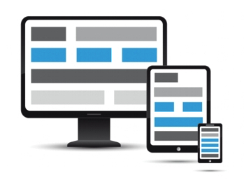
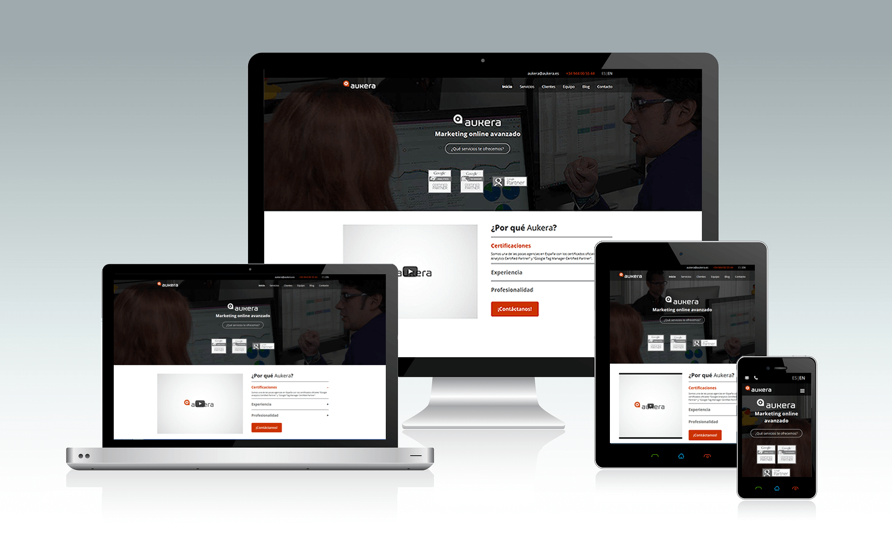
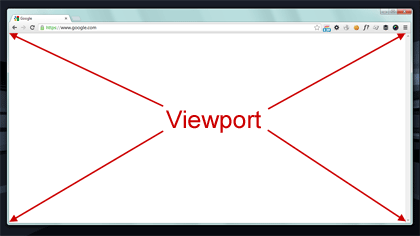
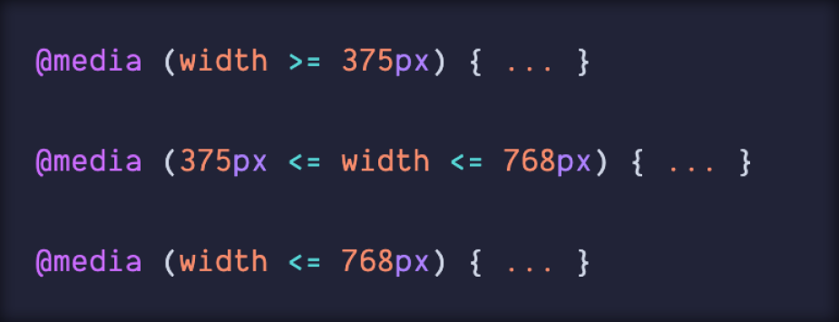

Semana 1
El Diseño Responsivo en Paginas Web

Logro de Aprendizaje:
Al final de la sesión, el estudiante conoce sobre el diseño responsivo en paginas Web, teniendo en cuenta sus principios y normativas para poder aplicarlo en paginas Web con contenido multimedia y poder aplicarlo en su carrera.

Diseño Responsivo:
Es una metodología de diseño web que busca asegurar que las páginas web se vean bien y
funcionen adecuadamente en una variedad de dispositivos y tamaños de pantalla.
Facilitando la navegación desde dispositivos con diferentes tamaños de pantalla como
celulares, tablets, laptops, monitores, etc. De esta manera, más usuarios pueden visitar
y usar el sitio sin frustraciones.
Caracteristicas:
- Flexibilidad y Fluidez:
- Cuadriculas flexibles:
- Imágenes flexibles:
- Priorizacion de contenidos:
- Optimización táctil y de usabilidad:
- Uso de Media Queries:
Emplea unidades relativas en lugar de medidas fijas para que las estructuras y contenedores cambien de tamaño de forma proporcional al tamaño de la pantalla.
Organiza el contenido de las paginas mediante estructuras en red o flexibles que redistribuyen los bloques de información sin romper el diseño y adaptarlo.
Las imágenes se ajustan automáticamente para adaptarse al tamaño de la pantalla sin perder calidad ni causar desplazamientos horizontales.
Simplifica la vista en pantallas pequeñas mostrando primero la información más relevante y ocultando o reubicando los elementos secundarios.
Adapta botones, menús desplegables y enlaces con un área de toque suficientemente grande para facilitar la navegación con los dedos en teléfonos y tabletas.
Emplea reglas condicionales para aplicar estilos específicos según el ancho, alto u orientación de la pantalla a la que se quiere adaptar la pagina.

¿ViewPort?
ViewPort es conocido por se la región visible de una página web en un dispositivo. En el contexto
deldiseño web responsivo, el viewport es el área de la pantalla donde se muestra el contenido de
una página web.
Gracias a esto, los sitios web no se muestran de la misma manera en los dispositivos móviles
que en las pantallas de los dispositivos de escritorio. Esta misma funcion, evita que los usuarios
tengan que hacer zoom para visualizar una web, debido a que se adaptan perfectamente al tamaño de
cualquier pantalla.
¿Media Query?
Media Query es una regla de CSS que permite aplicar estilos diferentes según el tamaño, la resolución o la orientación de la pantalla de un dispositivo.
- Permite crear sitios web adaptables que se ven bien en teléfonos, tabletas y computadoras.
- Cambiar el diseño, los colores o el tamaño de la letra cuando cambia el espacio disponible.
- Detectar si el usuario usa una pantalla táctil o un ratón.

Actividad Practica:
Comparación entre Paginas Responsivas y no Resposivas